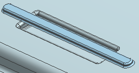

拉伸曲线
拉伸曲线组以在部件内侧面上形成凸台。
-
拉伸如图所示曲线，从20拉伸到直至下一个，然后将它与实体求和。

-
在凸台的所有边上创建半径为0.8 mm 的边倒圆。

-
为了镂空凸台以形成腔体，在同步建模工具条上的壳下拉菜单中，点击壳面
 。
。 -
为了一次选择所有的面，在选择条上的面规则列表中，选择筋板面，并确保已选中包含边界倒圆 。
-
选择如图所示的面。

-
将厚度值设为0.5 mm。
